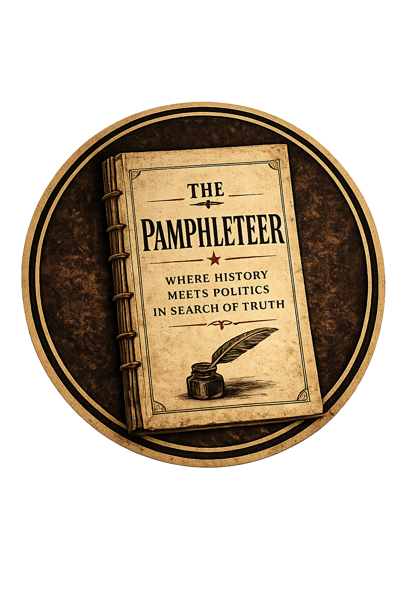

Philadelphia Native • Penn State Graduate • Public Policy Advocate
Penn State Political Science Graduate
Founder & Host — The Pamphleteer
Born and raised in Philadelphia, Pennsylvania, I spent more than thirty years in the city before living in Delaware and eventually relocating to Northeastern Pennsylvania.
After graduating from Frankford High School in 2001, I began my educational journey with plans to pursue Political Science and public service. Life took me in a different direction, and over the next two decades I built experience in leadership, operations, training, communications, and organizational management.
In 2021, I returned to higher education to complete a long-standing goal. I enrolled at Penn State and earned a Bachelor of Arts in Political Science in December 2025.
Today I am pursuing opportunities in public policy, advocacy, civic engagement, political communication, and public service.
My interest in politics did not begin in a classroom.
It began with a belief that government matters because the decisions made by public institutions affect the lives of ordinary people every day.
For many people, leaving college would have been the end of the story.
For me, it became unfinished business.
Returning to higher education was about more than earning a degree. It was about understanding the challenges facing our country, contributing to meaningful public conversations, and helping advance thoughtful, evidence-based solutions.
I believe democracy works best when citizens are informed, institutions are strong, and public policy is guided by knowledge rather than noise.

A twice-weekly project combining documentary-style political history with commentary on current events, public policy, democratic institutions, and civic engagement.
Launching Soon
Throughout American history, pamphlets informed citizens, encouraged debate, and helped explain complex political issues.
The Pamphleteer seeks to continue that tradition by helping audiences better understand history, institutions, ideas, and public policy.
Edward A. Wilson
Public Policy • Advocacy • Civic Engagement
Phone: 570-328-9877
Email: edwardawilson1983@outlook.com
LinkedIn: View Profile